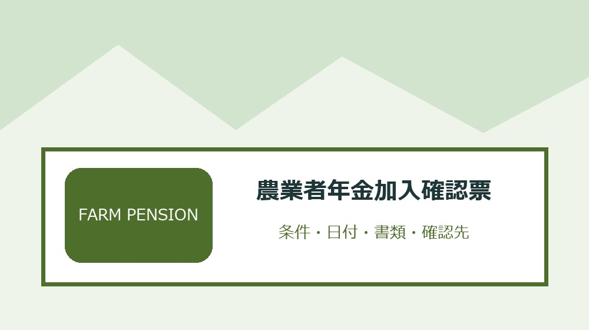
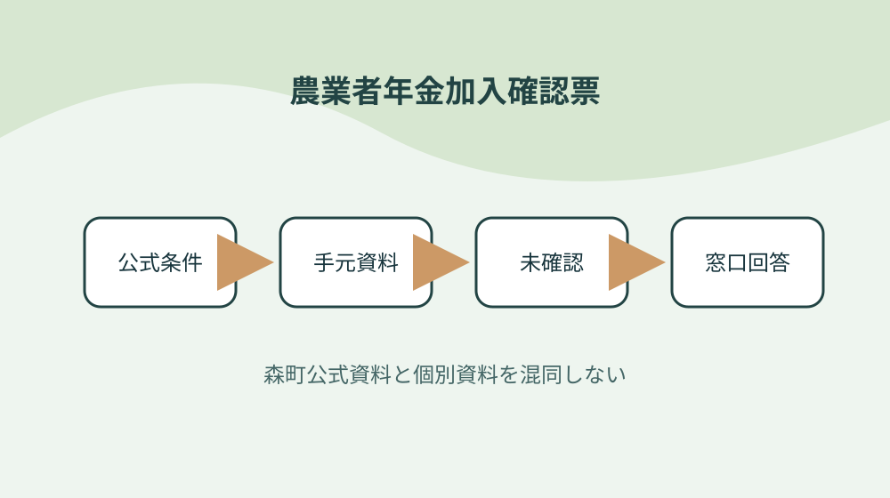
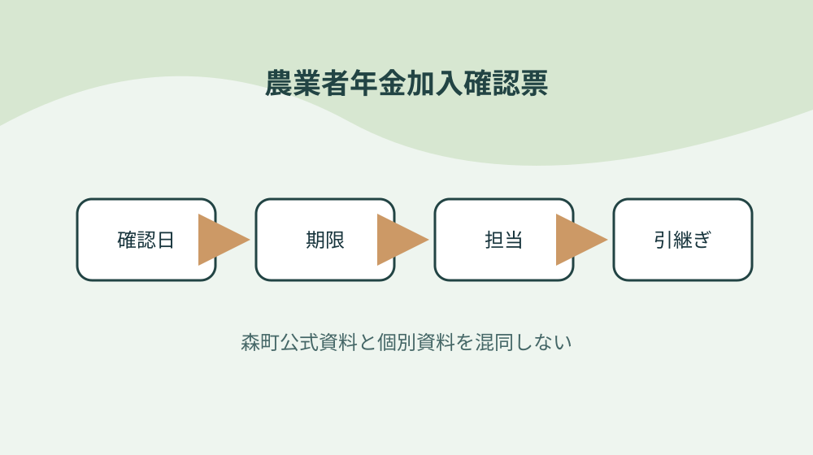

森町の農業者年金を年齢・従事日数・国民年金区分で確認する

結論：本人ごとに年齢を確認することから始め、農地の権利関係を別紙にする条件と「農業者年金は農業従事者向けの年金制度である」の根拠を農業者年金加入確認票へ結びます。期限と次の確認先まで一行にすれば、森町の農業者年金を年齢・従事日数・国民年金区分で確認する作業の取り違えを減らせます。
本人ごとに年齢を確認する
森町公式資料で確認できる事実は「農業者年金は農業従事者向けの年金制度である」です。本人ごとに年齢を確認するでは、この条件を農業者年金加入確認票の一行へ写し、対象者・対象物・確認日を同じ欄に置きます。制度名だけをメモせず、どの資料のどの条件を確認したかが家族や担当者にもたどれる形にしてください。
本人ごとに年齢を確認するを確かめるときは、「加入可否は年齢条件を確認する」という公式条件と、手元の通知・領収書・型番・日付を別列にします。必要資料が揃わなければ空欄を推測で埋めず、農業者年金加入確認票へ未確認の理由と次の照会先を記します。この表の役割は結論を急ぐことではなく、森町の農業者年金を年齢・従事日数・国民年金区分で確認するで起きる食い違いを安全に発見することです。
農業者年金加入確認票の作業日は、①「年間の農業従事日数を確認する」の掲載資料と更新日を見る、②本人ごとに年齢を確認するの手元資料を照合する、③不足一点だけを窓口へ尋ねる、④回答日と担当を追記する順に進めます。共通条件だけで個別可否を断定せず、森町の農業者年金を年齢・従事日数・国民年金区分で確認するに関する最新の運用を実行前に確かめます。
農業者年金加入確認票を引き継ぐ欄には、「国民年金の被保険者区分を確認する」の確認結果、次に行うこと、期限、原本の保管場所を書きます。本人ごとに年齢を確認するを更新したら旧版を消さず、変更理由と回答した窓口を一行添えます。担当者が替わっても、その事実をどの資料で確かめたかまで戻れるため、同じ問い合わせや書類の取り直しを減らせます。
農業従事日数を記録する
森町公式資料で確認できる事実は「年間の農業従事日数を確認する」です。農業従事日数を記録するでは、この条件を農業者年金加入確認票の一行へ写し、対象者・対象物・確認日を同じ欄に置きます。制度名だけをメモせず、どの資料のどの条件を確認したかが家族や担当者にもたどれる形にしてください。
農業従事日数を記録するを確かめるときは、「国民年金の被保険者区分を確認する」という公式条件と、手元の通知・領収書・型番・日付を別列にします。必要資料が揃わなければ空欄を推測で埋めず、農業者年金加入確認票へ未確認の理由と次の照会先を記します。この表の役割は結論を急ぐことではなく、森町の農業者年金を年齢・従事日数・国民年金区分で確認するで起きる食い違いを安全に発見することです。
農業者年金加入確認票の作業日は、①「通常保険料は月額範囲から選択する仕組みである」の掲載資料と更新日を見る、②農業従事日数を記録するの手元資料を照合する、③不足一点だけを窓口へ尋ねる、④回答日と担当を追記する順に進めます。共通条件だけで個別可否を断定せず、森町の農業者年金を年齢・従事日数・国民年金区分で確認するに関する最新の運用を実行前に確かめます。
農業者年金加入確認票を引き継ぐ欄には、「保険料は一定の範囲で変更できる」の確認結果、次に行うこと、期限、原本の保管場所を書きます。農業従事日数を記録するを更新したら旧版を消さず、変更理由と回答した窓口を一行添えます。担当者が替わっても、その事実をどの資料で確かめたかまで戻れるため、同じ問い合わせや書類の取り直しを減らせます。
国民年金の区分を確かめる
森町公式資料で確認できる事実は「通常保険料は月額範囲から選択する仕組みである」です。国民年金の区分を確かめるでは、この条件を農業者年金加入確認票の一行へ写し、対象者・対象物・確認日を同じ欄に置きます。制度名だけをメモせず、どの資料のどの条件を確認したかが家族や担当者にもたどれる形にしてください。
国民年金の区分を確かめるを確かめるときは、「保険料は一定の範囲で変更できる」という公式条件と、手元の通知・領収書・型番・日付を別列にします。必要資料が揃わなければ空欄を推測で埋めず、農業者年金加入確認票へ未確認の理由と次の照会先を記します。この表の役割は結論を急ぐことではなく、森町の農業者年金を年齢・従事日数・国民年金区分で確認するで起きる食い違いを安全に発見することです。
農業者年金加入確認票の作業日は、①「積立方式で運用される」の掲載資料と更新日を見る、②国民年金の区分を確かめるの手元資料を照合する、③不足一点だけを窓口へ尋ねる、④回答日と担当を追記する順に進めます。共通条件だけで個別可否を断定せず、森町の農業者年金を年齢・従事日数・国民年金区分で確認するに関する最新の運用を実行前に確かめます。
農業者年金加入確認票を引き継ぐ欄には、「終身年金として受給する制度である」の確認結果、次に行うこと、期限、原本の保管場所を書きます。国民年金の区分を確かめるを更新したら旧版を消さず、変更理由と回答した窓口を一行添えます。担当者が替わっても、その事実をどの資料で確かめたかまで戻れるため、同じ問い合わせや書類の取り直しを減らせます。
通常保険料の幅を相談する
森町公式資料で確認できる事実は「積立方式で運用される」です。通常保険料の幅を相談するでは、この条件を農業者年金加入確認票の一行へ写し、対象者・対象物・確認日を同じ欄に置きます。制度名だけをメモせず、どの資料のどの条件を確認したかが家族や担当者にもたどれる形にしてください。
通常保険料の幅を相談するを確かめるときは、「終身年金として受給する制度である」という公式条件と、手元の通知・領収書・型番・日付を別列にします。必要資料が揃わなければ空欄を推測で埋めず、農業者年金加入確認票へ未確認の理由と次の照会先を記します。この表の役割は結論を急ぐことではなく、森町の農業者年金を年齢・従事日数・国民年金区分で確認するで起きる食い違いを安全に発見することです。
農業者年金加入確認票の作業日は、①「要件を満たす人には保険料支援の仕組みがある」の掲載資料と更新日を見る、②通常保険料の幅を相談するの手元資料を照合する、③不足一点だけを窓口へ尋ねる、④回答日と担当を追記する順に進めます。共通条件だけで個別可否を断定せず、森町の農業者年金を年齢・従事日数・国民年金区分で確認するに関する最新の運用を実行前に確かめます。
農業者年金加入確認票を引き継ぐ欄には、「農地の貸借手続と年金加入は別手続である」の確認結果、次に行うこと、期限、原本の保管場所を書きます。通常保険料の幅を相談するを更新したら旧版を消さず、変更理由と回答した窓口を一行添えます。担当者が替わっても、その事実をどの資料で確かめたかまで戻れるため、同じ問い合わせや書類の取り直しを減らせます。

保険料支援の要件を分ける
森町公式資料で確認できる事実は「要件を満たす人には保険料支援の仕組みがある」です。保険料支援の要件を分けるでは、この条件を農業者年金加入確認票の一行へ写し、対象者・対象物・確認日を同じ欄に置きます。制度名だけをメモせず、どの資料のどの条件を確認したかが家族や担当者にもたどれる形にしてください。
保険料支援の要件を分けるを確かめるときは、「農地の貸借手続と年金加入は別手続である」という公式条件と、手元の通知・領収書・型番・日付を別列にします。必要資料が揃わなければ空欄を推測で埋めず、農業者年金加入確認票へ未確認の理由と次の照会先を記します。この表の役割は結論を急ぐことではなく、森町の農業者年金を年齢・従事日数・国民年金区分で確認するで起きる食い違いを安全に発見することです。
農業者年金加入確認票の作業日は、①「農地の権利設定は農業委員会への許可等を確認する」の掲載資料と更新日を見る、②保険料支援の要件を分けるの手元資料を照合する、③不足一点だけを窓口へ尋ねる、④回答日と担当を追記する順に進めます。共通条件だけで個別可否を断定せず、森町の農業者年金を年齢・従事日数・国民年金区分で確認するに関する最新の運用を実行前に確かめます。
農業者年金加入確認票を引き継ぐ欄には、「申請案件は農業委員会総会で審議される場合がある」の確認結果、次に行うこと、期限、原本の保管場所を書きます。保険料支援の要件を分けるを更新したら旧版を消さず、変更理由と回答した窓口を一行添えます。担当者が替わっても、その事実をどの資料で確かめたかまで戻れるため、同じ問い合わせや書類の取り直しを減らせます。
家族従事者を別行にする
森町公式資料で確認できる事実は「農地の権利設定は農業委員会への許可等を確認する」です。家族従事者を別行にするでは、この条件を農業者年金加入確認票の一行へ写し、対象者・対象物・確認日を同じ欄に置きます。制度名だけをメモせず、どの資料のどの条件を確認したかが家族や担当者にもたどれる形にしてください。
家族従事者を別行にするを確かめるときは、「申請案件は農業委員会総会で審議される場合がある」という公式条件と、手元の通知・領収書・型番・日付を別列にします。必要資料が揃わなければ空欄を推測で埋めず、農業者年金加入確認票へ未確認の理由と次の照会先を記します。この表の役割は結論を急ぐことではなく、森町の農業者年金を年齢・従事日数・国民年金区分で確認するで起きる食い違いを安全に発見することです。
農業者年金加入確認票の作業日は、①「年金相談と農地相談の資料を分ける」の掲載資料と更新日を見る、②家族従事者を別行にするの手元資料を照合する、③不足一点だけを窓口へ尋ねる、④回答日と担当を追記する順に進めます。共通条件だけで個別可否を断定せず、森町の農業者年金を年齢・従事日数・国民年金区分で確認するに関する最新の運用を実行前に確かめます。
農業者年金加入確認票を引き継ぐ欄には、「家族従事者も本人ごとに条件を確認する」の確認結果、次に行うこと、期限、原本の保管場所を書きます。家族従事者を別行にするを更新したら旧版を消さず、変更理由と回答した窓口を一行添えます。担当者が替わっても、その事実をどの資料で確かめたかまで戻れるため、同じ問い合わせや書類の取り直しを減らせます。
農地の権利関係を別紙にする
森町公式資料で確認できる事実は「年金相談と農地相談の資料を分ける」です。農地の権利関係を別紙にするでは、この条件を農業者年金加入確認票の一行へ写し、対象者・対象物・確認日を同じ欄に置きます。制度名だけをメモせず、どの資料のどの条件を確認したかが家族や担当者にもたどれる形にしてください。
農地の権利関係を別紙にするを確かめるときは、「家族従事者も本人ごとに条件を確認する」という公式条件と、手元の通知・領収書・型番・日付を別列にします。必要資料が揃わなければ空欄を推測で埋めず、農業者年金加入確認票へ未確認の理由と次の照会先を記します。この表の役割は結論を急ぐことではなく、森町の農業者年金を年齢・従事日数・国民年金区分で確認するで起きる食い違いを安全に発見することです。
農業者年金加入確認票の作業日は、①「農業者年金は農業従事者向けの年金制度である」の掲載資料と更新日を見る、②農地の権利関係を別紙にするの手元資料を照合する、③不足一点だけを窓口へ尋ねる、④回答日と担当を追記する順に進めます。共通条件だけで個別可否を断定せず、森町の農業者年金を年齢・従事日数・国民年金区分で確認するに関する最新の運用を実行前に確かめます。
農業者年金加入確認票を引き継ぐ欄には、「加入可否は年齢条件を確認する」の確認結果、次に行うこと、期限、原本の保管場所を書きます。農地の権利関係を別紙にするを更新したら旧版を消さず、変更理由と回答した窓口を一行添えます。担当者が替わっても、その事実をどの資料で確かめたかまで戻れるため、同じ問い合わせや書類の取り直しを減らせます。
貸借手続と年金加入を混同しない
森町公式資料で確認できる事実は「農業者年金は農業従事者向けの年金制度である」です。貸借手続と年金加入を混同しないでは、この条件を農業者年金加入確認票の一行へ写し、対象者・対象物・確認日を同じ欄に置きます。制度名だけをメモせず、どの資料のどの条件を確認したかが家族や担当者にもたどれる形にしてください。
貸借手続と年金加入を混同しないを確かめるときは、「加入可否は年齢条件を確認する」という公式条件と、手元の通知・領収書・型番・日付を別列にします。必要資料が揃わなければ空欄を推測で埋めず、農業者年金加入確認票へ未確認の理由と次の照会先を記します。この表の役割は結論を急ぐことではなく、森町の農業者年金を年齢・従事日数・国民年金区分で確認するで起きる食い違いを安全に発見することです。
農業者年金加入確認票の作業日は、①「年間の農業従事日数を確認する」の掲載資料と更新日を見る、②貸借手続と年金加入を混同しないの手元資料を照合する、③不足一点だけを窓口へ尋ねる、④回答日と担当を追記する順に進めます。共通条件だけで個別可否を断定せず、森町の農業者年金を年齢・従事日数・国民年金区分で確認するに関する最新の運用を実行前に確かめます。
農業者年金加入確認票を引き継ぐ欄には、「国民年金の被保険者区分を確認する」の確認結果、次に行うこと、期限、原本の保管場所を書きます。貸借手続と年金加入を混同しないを更新したら旧版を消さず、変更理由と回答した窓口を一行添えます。担当者が替わっても、その事実をどの資料で確かめたかまで戻れるため、同じ問い合わせや書類の取り直しを減らせます。
受給開始前の見通しを確認する
森町公式資料で確認できる事実は「年間の農業従事日数を確認する」です。受給開始前の見通しを確認するでは、この条件を農業者年金加入確認票の一行へ写し、対象者・対象物・確認日を同じ欄に置きます。制度名だけをメモせず、どの資料のどの条件を確認したかが家族や担当者にもたどれる形にしてください。
受給開始前の見通しを確認するを確かめるときは、「国民年金の被保険者区分を確認する」という公式条件と、手元の通知・領収書・型番・日付を別列にします。必要資料が揃わなければ空欄を推測で埋めず、農業者年金加入確認票へ未確認の理由と次の照会先を記します。この表の役割は結論を急ぐことではなく、森町の農業者年金を年齢・従事日数・国民年金区分で確認するで起きる食い違いを安全に発見することです。
農業者年金加入確認票の作業日は、①「通常保険料は月額範囲から選択する仕組みである」の掲載資料と更新日を見る、②受給開始前の見通しを確認するの手元資料を照合する、③不足一点だけを窓口へ尋ねる、④回答日と担当を追記する順に進めます。共通条件だけで個別可否を断定せず、森町の農業者年金を年齢・従事日数・国民年金区分で確認するに関する最新の運用を実行前に確かめます。
農業者年金加入確認票を引き継ぐ欄には、「保険料は一定の範囲で変更できる」の確認結果、次に行うこと、期限、原本の保管場所を書きます。受給開始前の見通しを確認するを更新したら旧版を消さず、変更理由と回答した窓口を一行添えます。担当者が替わっても、その事実をどの資料で確かめたかまで戻れるため、同じ問い合わせや書類の取り直しを減らせます。

相談日と回答窓口を残す
森町公式資料で確認できる事実は「通常保険料は月額範囲から選択する仕組みである」です。相談日と回答窓口を残すでは、この条件を農業者年金加入確認票の一行へ写し、対象者・対象物・確認日を同じ欄に置きます。制度名だけをメモせず、どの資料のどの条件を確認したかが家族や担当者にもたどれる形にしてください。
相談日と回答窓口を残すを確かめるときは、「保険料は一定の範囲で変更できる」という公式条件と、手元の通知・領収書・型番・日付を別列にします。必要資料が揃わなければ空欄を推測で埋めず、農業者年金加入確認票へ未確認の理由と次の照会先を記します。この表の役割は結論を急ぐことではなく、森町の農業者年金を年齢・従事日数・国民年金区分で確認するで起きる食い違いを安全に発見することです。
農業者年金加入確認票の作業日は、①「積立方式で運用される」の掲載資料と更新日を見る、②相談日と回答窓口を残すの手元資料を照合する、③不足一点だけを窓口へ尋ねる、④回答日と担当を追記する順に進めます。共通条件だけで個別可否を断定せず、森町の農業者年金を年齢・従事日数・国民年金区分で確認するに関する最新の運用を実行前に確かめます。
農業者年金加入確認票を引き継ぐ欄には、「終身年金として受給する制度である」の確認結果、次に行うこと、期限、原本の保管場所を書きます。相談日と回答窓口を残すを更新したら旧版を消さず、変更理由と回答した窓口を一行添えます。担当者が替わっても、その事実をどの資料で確かめたかまで戻れるため、同じ問い合わせや書類の取り直しを減らせます。
良い点
森町公式資料で確認できる事実は「積立方式で運用される」です。良い点では、この条件を農業者年金加入確認票の一行へ写し、対象者・対象物・確認日を同じ欄に置きます。制度名だけをメモせず、どの資料のどの条件を確認したかが家族や担当者にもたどれる形にしてください。
良い点を確かめるときは、「終身年金として受給する制度である」という公式条件と、手元の通知・領収書・型番・日付を別列にします。必要資料が揃わなければ空欄を推測で埋めず、農業者年金加入確認票へ未確認の理由と次の照会先を記します。この表の役割は結論を急ぐことではなく、森町の農業者年金を年齢・従事日数・国民年金区分で確認するで起きる食い違いを安全に発見することです。
農業者年金加入確認票の作業日は、①「要件を満たす人には保険料支援の仕組みがある」の掲載資料と更新日を見る、②良い点の手元資料を照合する、③不足一点だけを窓口へ尋ねる、④回答日と担当を追記する順に進めます。共通条件だけで個別可否を断定せず、森町の農業者年金を年齢・従事日数・国民年金区分で確認するに関する最新の運用を実行前に確かめます。
農業者年金加入確認票を引き継ぐ欄には、「農地の貸借手続と年金加入は別手続である」の確認結果、次に行うこと、期限、原本の保管場所を書きます。良い点を更新したら旧版を消さず、変更理由と回答した窓口を一行添えます。担当者が替わっても、その事実をどの資料で確かめたかまで戻れるため、同じ問い合わせや書類の取り直しを減らせます。
注文したい点
森町公式資料で確認できる事実は「要件を満たす人には保険料支援の仕組みがある」です。注文したい点では、この条件を農業者年金加入確認票の一行へ写し、対象者・対象物・確認日を同じ欄に置きます。制度名だけをメモせず、どの資料のどの条件を確認したかが家族や担当者にもたどれる形にしてください。
注文したい点を確かめるときは、「農地の貸借手続と年金加入は別手続である」という公式条件と、手元の通知・領収書・型番・日付を別列にします。必要資料が揃わなければ空欄を推測で埋めず、農業者年金加入確認票へ未確認の理由と次の照会先を記します。この表の役割は結論を急ぐことではなく、森町の農業者年金を年齢・従事日数・国民年金区分で確認するで起きる食い違いを安全に発見することです。
農業者年金加入確認票の作業日は、①「農地の権利設定は農業委員会への許可等を確認する」の掲載資料と更新日を見る、②注文したい点の手元資料を照合する、③不足一点だけを窓口へ尋ねる、④回答日と担当を追記する順に進めます。共通条件だけで個別可否を断定せず、森町の農業者年金を年齢・従事日数・国民年金区分で確認するに関する最新の運用を実行前に確かめます。
農業者年金加入確認票を引き継ぐ欄には、「申請案件は農業委員会総会で審議される場合がある」の確認結果、次に行うこと、期限、原本の保管場所を書きます。注文したい点を更新したら旧版を消さず、変更理由と回答した窓口を一行添えます。担当者が替わっても、その事実をどの資料で確かめたかまで戻れるため、同じ問い合わせや書類の取り直しを減らせます。
対案・結論
農業者年金加入確認票は、全項目を一度で完成させるより、「本人ごとに年齢を確認する」から確定する方が実用的です。公式条件、手元資料、窓口回答を別欄にし、加入可否は年齢条件を確認するという事実と個別事情の食い違いを消さずに残してください。
農地の権利関係を別紙にするに費用や契約が伴う場合は、対象・期限・事前手続を再確認してから進めます。森町の共通案内だけで個別案件を断定せず、積立方式で運用されるという確認済み情報と手元資料を示して尋ねます。
結論は、相談日と回答窓口を残すまでを今日の一行にし、次の確認日を決めることです。農業者年金加入確認票があれば、森町の農業者年金を年齢・従事日数・国民年金区分で確認するの作業を家族や社内担当が同じ根拠から続けられます。
家族従事者も本人ごとに条件を確認するという条件が更新された場合は旧版を削除せず、変更日と採用理由を記します。農業者年金加入確認票に履歴が残れば、古い書類や判断を使った理由も後から説明できます。
大石の視点
ここまでの「農業者年金は農業従事者向けの年金制度である」などの制度条件は森町公式資料で確認できる事実です。以下は、私、大石浩之が農業者年金加入確認票を運用するためにすすめる方法であり、森町や関係機関の公式見解ではありません。
私は農業者年金加入確認票を紙一枚から始め、農業従事日数を記録するの原本を動かさず、写しや写真へ番号を付ける方法を勧めます。森町の農業者年金を年齢・従事日数・国民年金区分で確認するの確認で原本を持ち歩く回数を減らせるからです。
貸借手続と年金加入を混同しないに未確認欄が残っても失敗扱いしません。確認先と期限が書かれた未確認欄は、終身年金として受給する制度であるを根拠なく個別案件へ当てはめるより価値があります。
最後に、農業者年金加入確認票に含む個人情報や事業情報は共有範囲を決めます。相談日と回答窓口を残すための内部版と外部提出版を同じファイルにせず、必要部分だけを渡せる構成にしてください。
よくある質問
農業者年金加入確認票で最初に確認することは何ですか。
対象者・対象物、基準日、手元資料、森町公式の条件を一行にします。農業者年金は農業従事者向けの年金制度であるという共通条件を起点にしつつ、個別の可否は資料と窓口回答で確定します。
資料が足りないまま農業者年金加入確認票を作れますか。
作れます。国民年金の区分を確かめるに不足があれば未確認と記し、必要資料、確認先、確認期限を残します。推測で埋めないことが、農業者年金加入確認票から安全に作業を再開する条件です。
森町公式ページを保存すれば再確認は不要ですか。
家族従事者も本人ごとに条件を確認するなどの条件は変わることがあります。農業者年金加入確認票へURL、ページ名、確認日を残し、農地の権利関係を別紙にするを実行する直前に現行案内を再確認してください。
農業者年金加入確認票を家族や担当者へ渡すとき何を添えますか。
相談日と回答窓口を残すため、確認済み事実、未確認事項、期限、次の担当、原本の保管場所、町へ尋ねた日と回答を添えます。農業者年金加入確認票に含む個人情報は渡す相手と保管方法を限定します。
公式情報源
- 農業者年金について（2026年8月19日確認）
- 耕作目的での農地の売買・貸借（2026年8月19日確認）
最終確認日：2026-08-19 ／ 公表事実と執筆者の解釈・意見を分けて記載しています。